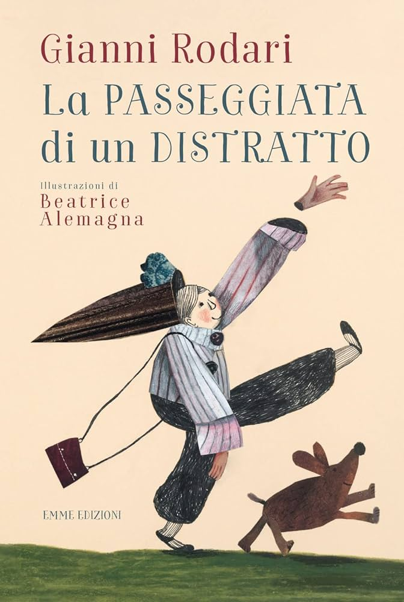

Trasposizioni al cinema
degli scritti di Rodari
Come creare delle forme nuove ma fedeli agli scritti fantastici di un intellettuale irripetibile?
Le trasposizioni cinematografiche degli scritti di Rodari sembrano una continua semplificazione del suo linguaggio e anche la scelta dei testi sembra privilegiare sempre quelli meno sperimentali, come il live-action “La torta in cielo” e il cortometraggio animato “La freccia azzurra“.
La scelta di un testo più radicale a livello linguistico la fa Anatolij Petrov nel 1969 cura un cortometraggio ispirato a Passeggiata di un distratto: la storia di un bambino, Giovanni, che perde per strada i suoi arti perché sta con la testa fra le nuvole. Lo stile di animazione è meno realistico: le forme sono sezioni pittoriche di colore.” Nel testo originale Giovanni è un bambino in carne ed ossa, nella trasposizione cinematografica diventa un burattino, e in questo modo lo spettatore viene preparato alla visione.
Storicamente nella costruzione di un film animato si tende a usare il reale come vincolo e si prende come modello il live action. Persino in quei passaggi che possono risultare più sperimentali c’è una spiegazione logica del perché l’animazione si allontana dalla realtà come nel caso di La passeggiata di un distratto. Un altro esempio lo possiamo prendere da Dumbo (1941). Nell’iconica sequenza degli elefanti rosa trombettisti, che si trasformano perennemente in corpi e forme diverse, dando vita a un momento onirico di altissimo livello, sappiamo che Dumbo è ubriaco e la visione è giustificata dalla sua condizione psicofisica, non scardina le direttrici del reale ma continua a ricalcarle.
Un esempio recente è il Mr Potato di Toy Story che cambia forma più volte nel corso dei film, ma anche qui, viene scelto l’unico giocattolo scomponibile. Ci aspettiamo di vedere quello che vedremo, le reazioni non sarebbero state le stesse se a cambiare forma fossero stati un orsetto o Woody stesso.